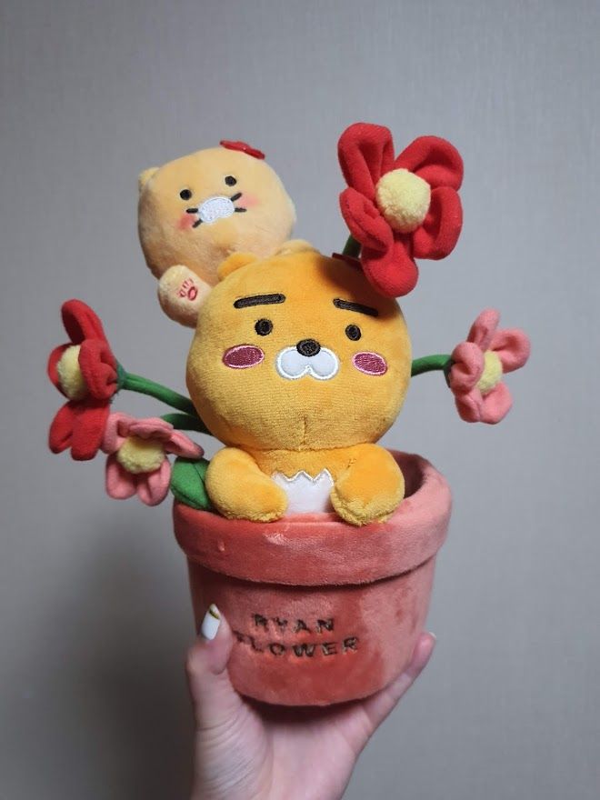

프로젝트 헤일메리
20210820 카푸캬라!
20210824 갤럭시 워치 4
20210911 라이언 화분
20200829 커스텀 방향제
20211008 브루니
20210911 국전 데이트
라이언 화분

무슨 페이지를 만들것이냐? 수봉씨와의 추억을 복기하는 페이지입니다.
익숙함에 속아
소중함
을 잃지 말자
는 취지입니다.
since 2019.08.29 ~
Judrick